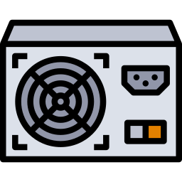
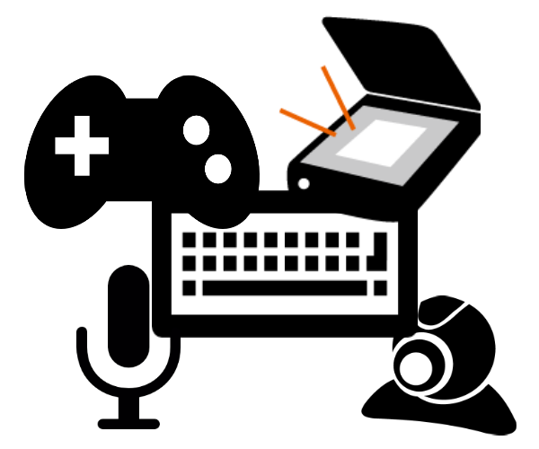

Hiztegia
Energia

- Definizioa:
-
Energia zerbait egiteko behar den indarra da; hari esker, gorputzek edo sistema materialek beren buruan edo beste gorputz batean aldaketak eragiteko gaitasuna dute.
- Adibidea:
-
Ordenagailuak, funtzionatzeko, energia elektrikoa behar du. Elikadura-iturriak korronte alternoa (AC) korronte jarraitu (DC) bihurtzeaz arduratzen da, ordenagailuek funtzionatzeko behar duten energia-forma.
Sarrera

- Definizioa:
-
Sistema informatiko bati informazioa ematen dion osagaia.
- Adibidea:
-
Sarrera gailuak
Irteera
- Definizioa:
-
Informatika-sistema batean informazioa erakusten duen osagaia.
- Adibidea:
-
Pantaila eta inprimagailua ordenagailu baten irteerako osagaiak dira.
Prozesatu

- Definición:
-
Eragiketa batzuk datu batzuekin egitea.
- Adibidea:
-
Garunak abiadura handian prozesatzen du informazioa.
 Definizioa:
Definizioa: